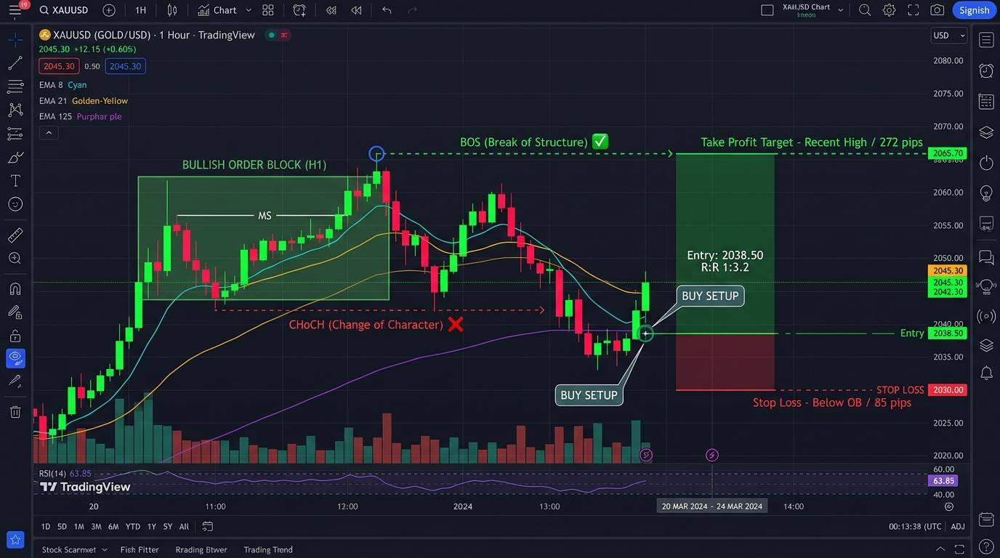
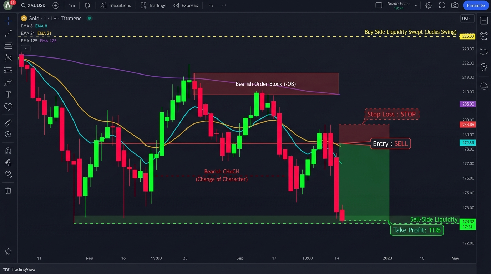
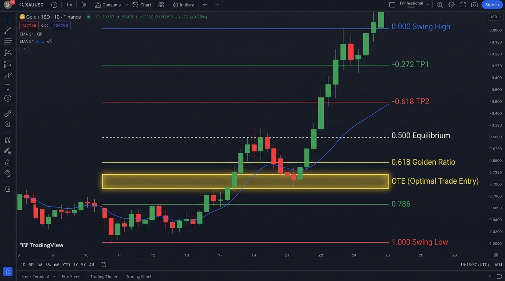

Ensiklopedia & Masterclass Terlengkap XAUUSD: Price Action Lanjutan (Wyckoff & Quasimodo), Strategi London Breakout, Volume Profile (POC/VAH/VAL), Divergensi Momentum, Likuiditas Bank, Smart Money Concepts, Fibonacci OTE, Triple EMA & Pyramiding
Strategi ini menggabungkan 3 lapis Exponential Moving Average (EMA) yang dirancang untuk menyaring tren pasar institusional, menangkap momentum, dan mendeteksi momentum pullback pada harga diskon/premium:
| Komponen EMA | Warna Chart | Fungsi Utama & Logika Trading |
|---|---|---|
| EMA 8 (Fast) | Cyan (#00e5ff) | Mengukur momentum jangka sangat pendek. Lilin pullback yang memantul di EMA 8 menunjukkan tren yang sangat kuat. |
| EMA 21 (Medium) | Kuning (#ffd600) | Level dinamis support/resistance utama. Area antara EMA 8 dan EMA 21 adalah Pullback Value Pocket (area ideal menunggu lilin konfirmasi). |
| EMA 125 (Baseline) | Ungu (#9c27b0) | Filter Arah Utama (Market Filter). Hanya boleh BUY jika harga di atas EMA 125. Hanya boleh SELL jika harga di bawah EMA 125. |
| Ribbon Cloud (8-21) | Cyan / Merah | Zona pita warna antara EMA 8 dan 21. Cyan menandakan akselerasi bullish, Merah menandakan akselerasi bearish. |


Indikator secara otomatis mendeteksi geometri lilin saat menyentuh zona EMA 8/21 dengan memori 3 lilin:
| Nama Pola Lilin | Karakter Geometri | Makna Institusional & Entry |
|---|---|---|
| 1. Hammer | Ekor bawah panjang (≥ 1.8x body), body kecil di ujung atas, ekor atas minim. | Penolakan keras terhadap harga rendah di area EMA. Buyer mulai masuk agresif. |
| 2. Pin Bar Bullish | Ekor bawah sangat dominan (≥ 60% total rentang candle). | Likuiditas di bawah level support/EMA terserap habis oleh pembeli institusi. |
| 3. Bullish Engulfing | Lilin hijau besar yang body-nya menelan seluruh body lilin merah sebelumnya. | Pembalikan momentum instan. Tekanan beli mendominasi total seller. |
| 4. Morning Star | Formasi 3 lilin: Merah besar → Lilin kecil/Doji di EMA → Hijau kuat (> 50% lilin 1). | Pelemahan tekanan jual diikuti oleh inisiasi tren naik baru. |
| 5. Piercing Line | Lilin hijau buka di dekat low merah lalu ditutup menembus > 50% body lilin merah. | Kekuatan pembeli berhasil menembus separuh benteng pertahanan penjual. |
| 6. Three White Soldiers | 3 lilin hijau berturut-turut dengan penutupan semakin tinggi dan body proporsional. | Akumulasi berkelanjutan. Konfirmasi tren bullish sangat kuat. |
| 7. Doji Rejection | Body lilin sangat tipis (≤ 18% range) dengan ekor bawah panjang (≥ 50% range). | Kondisi keraguan yang berakhir dengan penolakan harga bawah (rejection). |
| 8. Bullish Inside Bar | Lilin berada dalam rentang lilin induk sebelumnya, lalu breakout hijau ke atas. | Konsolidasi ketat di zona EMA yang diakhiri ledakan momentum beli ke atas. |
| 9. Two Candle Rejection | Ekor bawah panjang pada lilin 1 atau lilin 2, diikuti penutupan hijau mantap. | Konfirmasi ganda bahwa area support EMA 8/21 menolak penurunan harga. |
| Nama Pola Lilin | Karakter Geometri | Makna Institusional & Entry |
|---|---|---|
| 1. Shooting Star | Ekor atas panjang (≥ 1.8x body), body kecil di ujung bawah, ekor bawah minim. | Penolakan keras terhadap harga tinggi di area EMA. Seller mulai menekan habis. |
| 2. Pin Bar Bearish | Ekor atas sangat dominan (≥ 60% total rentang candle). | Likuiditas harga atas terserap dan langsung di-dump oleh institusi. |
| 3. Bearish Engulfing | Lilin merah besar yang body-nya menelan seluruh body lilin hijau sebelumnya. | Pembalikan momentum turun secara drastis. Seller menguasai pasar sepenuhnya. |
| 4. Dark Cloud Cover | Lilin merah buka di dekat high hijau lalu ditutup menembus < 50% body lilin hijau. | Tekanan jual mendadak masuk dan mematahkan separuh kekuatan buyer. |
| 5. Evening Star | Formasi 3 lilin: Hijau besar → Lilin kecil/Doji di EMA → Merah kuat (< 50% lilin 1). | Akhir dari reli naik dan permulaan gelombang penurunan baru. |
| 6. Three Black Crows | 3 lilin merah berturut-turut dengan penutupan semakin rendah dan body proporsional. | Distribusi agresif berkelanjutan. Konfirmasi tren bearish sangat kuat. |
| 7. Doji Rejection | Body lilin sangat tipis (≤ 18% range) dengan ekor atas panjang (≥ 50% range). | Ketidakpastian yang berakhir dengan penolakan harga atas di resistance EMA. |
| 8. Bearish Inside Bar | Lilin berada dalam rentang lilin induk sebelumnya, lalu breakdown merah ke bawah. | Kompresi volume di zona EMA yang ditembus paksa ke arah bawah. |
| 9. Two Candle Rejection | Ekor atas panjang pada lilin 1 atau lilin 2, diikuti penutupan merah mantap. | Konfirmasi ganda bahwa area resistance EMA 8/21 menolak kenaikan harga. |
| SMC & TRIPLE EMA MASTER [ XAUUSD M15 ] | |
|---|---|
| Triple EMA Trend: | BULLISH (8 > 21 > 125) |
| Market Structure: | BULLISH BOS (HL) |
| Major Resistance: | 2752.40 (+48.0 pips) → Level Target TP Buy |
| Major Support: | 2715.10 (-32.5 pips) → Level Pengaman SL Buy |
| Fibonacci Zone: | IN GOLDEN POCKET! (OTE 61.8%) |
| Active OBs / FVGs: | 2 OBs | 1 FVGs → Area Institusional |
| Market Safety: | Clear (No Warnings) → Aman untuk Eksekusi |
| Trade Signal: | BUY: Bullish Engulfing → Sinyal Eksekusi Terkonfirmasi! |
Indikator secara real-time memetakan dua tingkatan S/R untuk memandu target TP, SL, dan filter konfluensi:
| Tingkatan S/R | Tampilan Garis Chart | Fungsi Strategis |
|---|---|---|
| Minor S/R (Terdekat) | Garis Putus-Putus (Lookback 5 lilin) | Target TP 1 (Scalping Target). Level swing terdekat yang cepat bereaksi terhadap harga baru. Sangat cocok untuk mengunci profit awal dan menggeser SL ke Breakeven. |
| Major S/R (Kuat) | Garis Tebal Solid (Lookback 15 lilin) | Target TP 2 (Major Target) & Pengaman SL. Level ekstremum institusional yang diuji berkali-kali. Jarak pips-nya tertera langsung di HUD. |
| Gaya Trading | Timeframe Entry | Filter Tren Acuan | Karakteristik & Rekomendasi |
|---|---|---|---|
| Scalping Cepat | M5 (5 Menit) | H1 / M15 | Peluang sering (5–10 per hari), SL tipis 12–20 pips, target 25–45 pips. Wajib ikuti SOP M5 di bawah. |
| Day Trading (Golden) | M15 (15 Menit) | H1 | PALING DIREKOMENDASIKAN (Sweet Spot). Keseimbangan terbaik antara akurasi tinggi dan rasio risk-reward. |
| Swing Pendek | H1 (1 Jam) | H4 | Akurasi tertinggi (Winrate 75%+). Sinyal jarang namun false signal hampir tidak ada. |
Timeframe M5 sangat bagus untuk scalping cepat dengan RRR 1:2 atau 1:3, namun wajib mematuhi 4 aturan emas berikut:
Warning: EMA Sideways atau Warning: Whipsaw → SKIP / JANGAN ENTRY!
| Grade | Kombinasi Konfluensi | Estimasi Winrate | Rekomendasi Aksi Lot |
|---|---|---|---|
| A+ (SUPER) | Pullback EMA 8/21 + Pola Candle + Order Block / FVG + Golden Pocket 61.8% | Sangat Tinggi (80%+) | Full Risk (1-2% modal). Setup institusi paling presisi. |
| A (HIGH) | Pullback EMA 8/21 + Pola Candle + Major Support / Resistance | Tinggi (70 - 78%) | Standar Risk (1% modal). Setup harian utama. |
| B (MEDIUM) | Pullback EMA 8/21 + Pola Candle murni (tanpa confluence OB/FVG/SR) | Sedang (60 - 68%) | Half Risk (0.5% modal). Amankan profit cepat di TP1. |
| D (REJECT) | Muncul sinyal saat Dashboard Safety menampilkan EMA Sideways / Whipsaw | Rendah (< 40%) | SKIP / JANGAN ENTRY. Risiko tinggi false breakout. |
Gunakan kartu pemindaian cepat ini tepat di meja trading Anda sebelum mengeksekusi order Buy atau Sell:
| Waktu | Objek Pemeriksaan | ✅ Kondisi Lolos (Lampu Hijau) | ⛔ Kondisi Batalkan / STOP |
|---|---|---|---|
| Detik 1 – 2 | Tren Utama (EMA 125) | • Harga di atas EMA 125 → Fokus BUY • Harga di bawah EMA 125 → Fokus SELL |
Harga memotong bolak-balik EMA 125 (market tidak ada tren). |
| Detik 3 – 4 | Momentum (EMA 8 vs 21) | • Ribbon Cyan (EMA 8 > 21) untuk Buy • Ribbon Merah (EMA 8 < 21) untuk Sell |
Pita EMA 8 & 21 menempel rapat/mampat (sideways chop). |
| Detik 5 – 6 | Area Pullback | Lilin baru saja menguji/menyentuh area kantong nilai antara EMA 8 dan 21. | Lilin sudah melompat jauh meninggalkan EMA (Overextended > 2.2x ATR). |
| Detik 7 – 8 | Lilin Konfirmasi (Closed Bar) | Lilin telah SELESAI DITUTUP dan membentuk 1 dari 9 pola pembalikan valid. | Lilin masih bergerak/berjalan (belum close), bentuk pola masih bisa berubah. |
| Detik 9 | HUD Market Safety | Kolom Safety berstatus Clear (No Warnings). | Muncul Warning: EMA Sideways atau Warning: Whipsaw. |
| Detik 10 | Ruang Profit (Headroom) | Ada jarak minimal 1:2 sebelum membentur garis Major S/R di depannya. | Jarak ke tembok Resistance (Buy) atau Support (Sell) terlalu sempit (< 15 pips). |
Scalping di grafik 5 Menit (M5) membutuhkan presisi tinggi karena pergerakan harga sangat cepat. Kunci sukses di M5 adalah menjadi penembak jitu (sniper): hanya masuk pada setup pertemuan multi-konfluensi, bukan mengejar setiap lilin yang bergerak.
Buka menu Settings indikator di TradingView dan pastikan opsi berikut aktif:
Discount Zone atau IN GOLDEN POCKET!
Premium Zone atau IN GOLDEN POCKET!
Scalping M5 HANYA EFEKTIF pada jam-jam dengan volume institusional raksasa:
• Sesi London: Pukul 14:30 – 17:30 WIB (Awal pergerakan tren kuat).
• Sesi New York: Pukul 19:30 – 22:30 WIB (Puncak likuiditas dan volatilitas tertinggi).
DILARANG TRADING pada sesi Asia pagi/siang atau lewat tengah malam karena pasar cenderung sideways dan sering memicu false breakout.
Bagi trader yang menggunakan platform MetaTrader 5 broker resmi PT Didi Max Berjangka (Regulasi Bappebti), seluruh eksekusi trading harus disesuaikan dengan aturan kontrak perdagangan berjangka lokal:
| Spesifikasi Kontrak | Nilai di DIDIMAX MT5 | Penjelasan & Rekomendasi Penggunaan |
|---|---|---|
| Simbol Pair Emas | XAUUSD.dmb |
Seluruh instrumen di MT5 DIDIMAX memiliki sufiks .dmb. Wajib memilih simbol ini di Strategy Tester maupun live chart. |
| Volume Minimal | 0.10 Lot |
DIDIMAX tidak menyediakan akun mikro (0.01 lot). Order di bawah 0.10 lot akan ditolak otomatis oleh server (Error 10014). |
| Volume Step (Kelipatan) | 0.10 Lot |
Kenaikan lot wajib kelipatan 0.10 (misal: 0.10, 0.20, 0.30, dst). |
| Ukuran Kontrak (Contract Size) | 100 oz | Pada 0.10 lot, pergerakan $1.00 pada harga emas bernilai $10.00 ($1.00 per pip / 10 cents). |
| Rata-rata Spread | 35 – 50 Poin ($0.35 – $0.50) | Biaya spread per transaksi pada 0.10 lot adalah sekitar $3.50 – $5.00. |
Source code EA EA_Institutional_SMC_Triple_EMA.mq5 telah dilengkapi fungsi cerdas NormalizeLots(). Jika Anda tanpa sengaja menginput lot 0.01 atau saldo kecil pada mode Risk %, EA akan secara otomatis menaikkan volume transaksi ke 0.10 lot dan mendeteksi mode Type Filling DIDIMAX secara otomatis.
Jika Anda melakukan 10 trade sehari pada M5, biaya spread yang Anda bayarkan ke broker mencapai $40 – $50 per hari ($1.000+ per bulan)!
• Kunci Sukses: Batasi trading maksimal 2 s/d 3 transaksi per hari.
• Aturan Max 2 Loss: Jika mengalami 2 kali Stop Loss berturut-turut dalam satu hari, segera tutup chart dan lanjutkan esok hari.
Tentukan gaya trading yang paling cocok dengan kepribadian, ketersediaan waktu, dan toleransi risiko Anda:
| Parameter | Timeframe M5 (Scalping) | Timeframe M15 (Day Trading) ⭐ | Timeframe H1 (Swing/Institusi) 💎 |
|---|---|---|---|
| Gaya Trading | Fast Scalping (Agresif) | Day Trading (Balanced Sweet Spot) | Swing Trading (Santai & Konservatif) |
| Akurasi (Win Rate) | 55% – 65% (Tinggi noise) | 68% – 78% (Sangat Seimbang) | 75% – 85% (Paling Akurat) |
| Rata-rata Trade | 2 – 4 trade / hari | 1 – 2 trade / hari | 2 – 4 trade / pekan |
| Target Take Profit | $2.50 – $4.00 (25 – 40 pips) | $8.00 – $15.00 (80 – 150 pips) | $20.00 – $40.00 (200 – 400 pips) |
| Jarak Stop Loss | $1.80 – $2.50 | $4.00 – $7.00 | $10.00 – $18.00 |
| Pengaruh Spread | Cukup Berasa (~12-15%) | Sangat Ringan (< 4%) | Hampir Tidak Terasa (< 1.5%) |
| Waktu Pantau Chart | Fokus penuh 1–2 jam per sesi | Cek chart tiap 15 menit | Cek chart 2–3 kali sehari |
| Rekomendasi | Hanya untuk trader berpengalaman dengan disiplin ketat. | SANGAT DIREKOMENDASIKAN untuk trader harian yang ingin profit stabil. | Sangat ideal bagi yang memiliki pekerjaan utama dan ingin hasil aman. |
Pasar finansial global, terutama XAUUSD (Gold), tidak digerakkan oleh garis acak atau indikator ritel sederhana. Pasar digerakkan oleh Order Flow Institusi Besar (Central Banks, Hedge Funds, Tier-1 Banks) yang membutuhkan miliaran dolar likuiditas untuk mengeksekusi posisi mereka tanpa menyebabkan harga lari (slippage parah).
Lokasi: Bertumpuk tepat di atas Swing High, Equal Highs (Double/Triple Top), dan level Resistance kunci.
Isi Pesanan: Kumpulan order Buy Stop (trader breakout) dan Stop Loss dari para penjual (seller). Smart Money memanfaatkan kumpulan order beli ini untuk membuang (SELL/Dumping) posisi raksasa mereka pada harga tertinggi (Premium).
Lokasi: Bertumpuk tepat di bawah Swing Low, Equal Lows (Double/Triple Bottom), dan level Support kunci.
Isi Pesanan: Kumpulan order Sell Stop (trader breakdown) dan Stop Loss dari para pembeli (buyer). Smart Money sengaja mendorong harga turun menjemput SSL untuk memborong (BUY/Accumulation) pada harga diskon termurah.
Seringkah Anda mengalami kondisi: "Begitu saya Buy di breakout, harga langsung berbalik turun mengenai Stop Loss, lalu terbang tinggi setelah SL saya tersentuh?" Inilah yang disebut Stop Hunt / Judas Swing.
Saat rilis berita ekonomi berdampak tinggi (Non-Farm Payrolls / NFP, US CPI / Inflasi, FOMC Interest Rate, US PPI, Retail Sales), likuiditas pasar antar-bank ditarik seketika. Hal ini memicu:
SOP WAJIB: Kunci posisi atau geser SL ke Breakeven 15 menit sebelum berita rilis. JANGAN PERNAH membuka posisi baru 15 menit sebelum s/d 15 menit setelah rilis berita bertanda merah (Red Folder)!
90% kegagalan trader ritel bukan disebabkan oleh ketidaktahuan indikator, melainkan ketidakmampuan mengendalikan respon emosi biologis terhadap ketidakpastian dan kerugian uang. Trading profesional adalah permainan ketahanan psikologis dan probabilitas statistik murni.
| Fase Emosi | Reaksi Pikiran Ritel (Salah) | Sikap Mental Institusional (Benar) |
|---|---|---|
| 1. Euforia (Pasca 3x Win) | "Saya sudah menguasai market! Waktunya melipatgandakan ukuran lot!" (Overconfidence). | "Ini hanyalah variansi statistik normal. Tetap gunakan lot standar sesuai kalkulator risiko." |
| 2. Denial (Saat Minus Berjalan) | "Sebentar lagi pasti berbalik naik, SL saya geser atau hapus saja." (Hoping). | "SL adalah biaya operasional bisnis. Jika tersentuh, analisa salah. Saya terima kerugian kecil ini." |
| 3. Revenge Trading (Pasca Kena SL) | "Market tidak adil! Saya harus kembalikan modal saya SEKARANG JUGA dengan lot 2x lipat!" | Wajib Aktifkan Rule of 2: Tutup layar, tinggalkan chart, dan jeda minimal 2 jam. |
| 4. Despair / MC (Modal Habis) | "Strategi ini sampah, ganti indikator baru lagi." (System Hopper tiada akhir). | Evaluasi Jurnal Trading: Temukan kesalahan aturan eksekusi dan perbaiki SOP pribadi. |
Jika dalam 1 hari Anda mengalami 2 kali Stop Loss berturut-turut, sesi trading Anda hari itu RESMI SELESAI.
Secara biologis, saat mengalami 2 loss beruntun, hormon kortisol membanjiri otak dan membajak area Prefrontal Cortex (pusat logika). Melanjutkan trading dalam kondisi ini memiliki peluang 88% berujung pada kerugian yang jauh lebih besar.
Jika lilin hijau/merah raksasa telah melesat meninggalkan EMA 8 lebih dari 3 candle, JANGAN PERNAH MENGEJAR HARGA!
"Pasar buka 24 jam sehari, 5 hari sepekan. Melewatkan satu kereta bukanlah kerugian, tetapi menyelamatkan modal Anda dari jebakan pucuk/lembah. Selalu tunggu kembalinya harga ke Value Pocket (EMA 8/21)."
Jangan pernah menilai keberhasilan strategi Anda dari 1 atau 2 transaksi. Dalam kumpulan 20 transaksi acak dengan Win Rate 65%, urutan menang dan kalah adalah acak sempurna:
Jika Anda menyerah atau menggandakan lot saat menghadapi 2 loss di awal, Anda tidak akan pernah mencapai hasil akhir yang menguntungkan. Disiplin konsisten adalah satu-satunya kunci.
Manajemen risiko adalah batas pemisah antara spekulator yang bangkrut dengan manajer dana yang kaya raya. Pada broker DIDIMAX dengan batas minimum 0.10 lot (step 0.10) dan kontrak 100 oz, kalkulasi risiko harus presisi:
Rumus:
Contoh: Saldo $5,000, toleransi risiko 1.5% ($75), Jarak SL setup M15 adalah 50 pips ($5.00).
Kalkulasi: Lot = $75 / (50 pips × $1.00) = 0.15 lot. Dibulatkan ke bawah menjadi 0.10 lot (mengutamakan keselamatan modal).
| Saldo Akun | Ukuran Lot | Maks. Jarak Stop Loss | Maks. Dolar Berisiko | Risiko % | Toleransi Sesi |
|---|---|---|---|---|---|
| $1,000 USD | 0.10 lot (Wajib) | 25 pips ($2.50) | $25.00 | 2.5% | Hanya M15/H1. Dilarang M5 (noise tinggi). |
| $3,000 USD | 0.10 lot | 45 pips ($4.50) | $45.00 | 1.5% | Sangat aman. Cocok untuk M15 Day Trading. |
| $5,000 USD | 0.10 – 0.20 lot | 40 – 50 pips ($4.00 – $5.00) | $50.00 – $80.00 | 1.0% – 1.6% | Ukuran Akun Rekomendasi Ideal. Fleksibel M5 & M15. |
| $10,000 USD | 0.20 – 0.40 lot | 40 – 60 pips ($4.00 – $6.00) | $100.00 – $160.00 | 1.0% – 1.6% | Pertumbuhan portofolio stabil institusional. |
| $25,000+ USD | 0.50 – 1.00 lot | 50 – 80 pips ($5.00 – $8.00) | $250.00 – $500.00 | 1.0% – 2.0% | Full Institutional Account. Multi-timeframe execution. |
Kekuatan bunga berbunga (compounding) tidak membutuhkan risiko gila-gilaan. Dengan target realistis 8% per bulan (hanya membutuhkan rata-rata 1.5% - 2% profit bersih per pekan), perhatikan pertumbuhan modal $5,000:
| Periode | Saldo Awal | Target Profit (8%) | Saldo Akhir | Rekomendasi Lot Aman | Pertumbuhan Kumulatif |
|---|---|---|---|---|---|
| Bulan 1 | $5,000.00 | +$400.00 | $5,400.00 | 0.10 lot | +8.0% |
| Bulan 3 | $5,832.00 | +$466.56 | $6,298.56 | 0.10 – 0.20 lot | +26.0% |
| Bulan 6 | $7,346.64 | +$587.73 | $7,934.37 | 0.20 – 0.30 lot | +58.7% |
| Bulan 9 | $9,254.65 | +$740.37 | $9,995.02 | 0.30 – 0.40 lot | +99.9% |
| Bulan 12 | $11,657.38 | +$932.59 | $12,589.97 | 0.40 – 0.50 lot | +151.8% (Modal Berlipat 2.5x) |
*Catatan: Disiplin menaikkan lot hanya saat saldo mencapai ambang batas baru. Jika saldo mengalami drawdown, turunkan lot kembali ke level sebelumnya.
"Apa yang tidak bisa diukur, tidak bisa diperbaiki." Trader profesional selalu mencatat setiap transaksi dalam jurnal harian untuk mendeteksi kelemahan psikologis, mengukur kehandalan sinyal, dan menyempurnakan kualitas eksekusi.
| Tanggal | Waktu/Sesi | TF | Arah | Konfirmasi Setup | Entry | SL | TP | Pips ($) | SOP? | Catatan Evaluasi & Emosi |
|---|---|---|---|---|---|---|---|---|---|---|
| 12/10 | 15:20 (LDN) | M15 | BUY | BOS + Pullback EMA 21 + Hammer | 2412.00 | 2408.00 | 2419.00 | +70 ($70) | 100% YA | Sangat sabar menunggu retest EMA 21. Sesuai rencana. |
| 12/10 | 20:15 (NY) | M15 | SELL | Sweep BSL + CHoCH + Pin Bar | 2425.00 | 2428.50 | 2416.00 | +90 ($90) | 100% YA | Judas swing terdeteksi sempurna. Entry presisi di retest EMA 8. |
| 13/10 | 16:00 (LDN) | M5 | BUY | Lilin Hijau Cepat (Tanpa Retest EMA) | 2418.50 | 2415.50 | 2424.00 | -30 (-$30) | TIDAK (FOMO) | Melanggar aturan! Terburu-buru mengejar lilin yang jauh dari EMA 8. |
1. Win Rate (WR): Target Sehat: 60% – 75%.
Rumus: (Total Transaksi Menang / Total Transaksi) × 100%. Jangan terpaku pada Win Rate 90% yang tidak realistis.
2. Profit Factor (PF): Target Wajib: > 1.80.
Rumus: Gross Profit ($) / Gross Loss ($). Menunjukkan berapa dolar yang Anda hasilkan untuk setiap $1 yang Anda risikokan.
3. Risk-to-Reward Ratio (RRR) Rata-rata: Minimal 1 : 1.3 s/d 1 : 2.0.
Memastikan trade pemenang selalu bernilai lebih besar daripada trade yang kalah.
4. Maximum Drawdown (MDD): Batas Maksimal: < 8% – 10%.
Penurunan modal terdalam dari titik puncak (Peak). Jika MDD menembus 10%, hentikan trading dan turunkan volume lot menjadi separuh.
5. SOP Compliance Score: Target Wajib: > 95%.
Persentase trade yang dieksekusi 100% mengikuti aturan SOP tanpa dipengaruhi rasa takut atau serakah.
Berikut adalah 3 studi kasus nyata pergerakan harga XAUUSD (Gold) untuk melatih ketajaman mata Anda dalam membedakan setup berkualitas tinggi (A+) dengan jebakan pasar:
Kondisi Pasar: Timeframe M15. Tren H1 Bullish kuat. Pukul 15:00 WIB, harga mematahkan swing high sebelumnya (BOS Bullish). Garis EMA tersusun rapi: EMA 8 di atas EMA 21, dan keduanya berada jauh di atas EMA 125.
Kondisi Pasar: Pukul 20:00 WIB pembukaan New York. Harga menyapu Buy-Side Liquidity (BSL) di atas High sesi London pada 2427.50. Segera setelah menyentuh level tersebut, candle tidak mampu bertahan dan langsung ambruk.
Kondisi Pasar: Pukul 18:45 WIB di Timeframe M5. Muncul lilin hijau besar marubozu menembus resistance lokal. Trader pemula tergoda langsung klik BUY karena takut ketinggalan kereta (FOMO).
Cetak lembar ini dan letakkan tepat di samping layar monitor Anda. Jangan pernah menekan tombol Order di MetaTrader jika ada satu kotak pun yang belum tercentang:
Sebelum menekan tombol transaksi, setiap trader pemula wajib memahami instrumen yang diperdagangkan, cara perhitungan angka profit/loss, serta mekanisme margin pada broker:
Emas (Gold) adalah komoditas logam mulia bernilai tinggi yang diperdagangkan terhadap Dolar AS dalam satuan Troy Ounce (oz). Emas memiliki karakteristik:
Format harga XAUUSD memiliki 2 digit desimal (misal: 2415.50):
Pada ukuran kontrak 100 oz (1 standard lot):
Trading derivatif menggunakan sistem Leverage (daya ungkit). Leverage 1:100 berarti Anda hanya perlu menyediakan jaminan (margin) sebesar 1% dari nilai kontrak transaksi:
(Equity / Margin Terpakai) × 100%. Indikator kesehatan akun Anda."The Higher Timeframe is King." Trader amatir sering terjebak melihat lilin kecil di M5 tanpa menyadari bahwa pergerakan tersebut sedang menabrak tembok raksasa resistance pada H4 atau Daily. Analisis institusional selalu dimulai dari atas ke bawah:
| Lapis Timeframe | Peran Analisis | Kondisi yang Dicari | Tindakan Eksekusi |
|---|---|---|---|
| 1. Daily (D1) Macro Bias |
Menentukan bias arah harian (Daily Bias). | Apakah lilin harian sedang menguji level tertinggi/terendah pekanan? Apakah tren makro Bullish atau Bearish? | Menentukan apakah hari ini prioritas utama adalah Cari Sinyal BUY atau Cari Sinyal SELL. |
| 2. 4-Hour (H4) Key Zones |
Memetakan benteng pertahanan institusi (Supply & Demand). | Identifikasi Major Order Blocks, FVG besar, dan area Equal Highs / Equal Lows yang belum tersapu (Unswept Liquidity). | Menandai garis horizontal zona pantul penting tempat harga kemungkinan besar berbalik arah. |
| 3. 1-Hour (H1) Trend Baseline |
Filter Tren Intraday (EMA 125 Master). | Posisi harga terhadap EMA 125. Jika di atas EMA 125 = Intraday Bullish. Jika di bawah = Intraday Bearish. | Validasi Keamanan: Dilarang keras BUY jika H1 di bawah EMA 125, dilarang SELL jika H1 di atas EMA 125. |
| 4. M15 / M5 Execution Trigger |
Pemicu Eksekusi Entry & Penempatan Stop Loss Presisi. | Harga pullback menyentuh Value Pocket (EMA 8–21) + Terbentuk 1 dari 9 Pola Candlestick Rejection. | KLIK ORDER! Entry instan dengan Stop Loss ketat di balik sumbu lilin konfirmasi. |
Tingkat probabilitas setup trading diukur dari keselarasan multi-timeframe:
Emas tidak bergerak dalam ruang hampa. Di pasar institusional, pergerakan harga emas memiliki hubungan korelasi matematis yang sangat erat dengan dua aset global utama:
Korelasi: Sangat Negatif (-0.75 s/d -0.85).
Karena emas dinilai dalam satuan USD, penguatan Dolar AS membuat harga emas menjadi lebih mahal bagi pembeli internasional, sehingga menurunkan permintaan.
Korelasi: Biaya Peluang (Opportunity Cost).
Emas adalah aset Zero Yield (tidak memberikan dividen bunga). Obligasi Pemerintah AS 10-Tahun adalah aset bebas risiko yang memberikan imbal hasil bunga tetap.
Pada kondisi darurat global (pecah perang terbuka, eskalasi militer antar-negara besar, atau krisis kebangkrutan sistemik perbankan), hukum korelasi normal bisa terdistorsi sementara. Pasar memasuki mode Risk-Off di mana investor institusi memborong Emas dan Dolar AS secara bersamaan demi keamanan modal.
Aturan Disiplin: Saat sentimen geopolitik meledak (Breaking War News), hindari memasang posisi SELL sembarangan karena reli kenaikan emas dapat menembus semua level resistance teknikal tanpa rem!
Kuasai bahasa pasar institusional agar Anda dapat membaca chart seperti seorang manajer dana profesional:
Pendekatan trading paling unggul di era modern bukanlah 100% manual (rentan kelelahan & emosi manusia) atau 100% otomatis buta (bisa terjebak anomali berita ekstrem), melainkan Model Sinergi Hybrid:
NormalizeLots() sesuai aturan minimum lot broker DIDIMAX.Klik tombol "Algo Trading" di toolbar MT5 menjadi tombol abu-abu (Nonaktif) pada kondisi berikut:
Untuk memastikan robot EA berjalan 24 jam sehari selama 5 hari bursa tanpa terganggu mati lampu, koneksi Wi-Fi rumah putus, atau laptop masuk mode sleep:
Menjadi trader yang mencetak profit konsisten adalah proses pengembangan keahlian profesional, bukan skema cepat kaya semalam. Ikuti peta jalan terstruktur 90 hari ini:
Fokus Utama: Menghafal 9 Pola Candlestick Institutional, memahami kerja Triple EMA, memasang indikator TradingView dan EA di MT5 Demo DIDIMAX.
Fokus Utama: Membuka akun riil dengan deposit terukur (misal $1,000 s/d $3,000) dan bertransaksi 0.10 lot fix.
Fokus Utama: Menguji kestabilan sistem dalam jangka panjang dan menerapkan rencana scaling lot.
Fibonacci Retracement adalah instrumen matematis berbasis deret angka alamiah dan Rasio Emas (Φ = 1.618 / 0.618) yang memetakan kedalaman gelombang koreksi harga (*pullback*) sebelum ekspansi tren berlanjut. Dalam ekosistem Smart Money Concepts (SMC) dan algoritma interbank IPDA (*Interbank Price Delivery Algorithm*), Fibonacci bukan sekadar garis acak di layar, melainkan alat kalkulasi matematis untuk membagi rentang transaksi (*Dealing Range*) menjadi zona Diskon (*Discount*) dan zona Mahal (*Premium*).
Gunakan pengaturan level institusional di bawah ini pada tool Fib Retracement Anda. Hilangkan centang warna pelangi bawaan default (*uncheck background*) agar chart bersih, objektif, dan fokus hanya pada level eksekusi presisi tinggi:
| Level Input | Persentase | Klasifikasi Zona | Warna Garis | Fungsi Institusional & Aksi Trader XAUUSD |
|---|---|---|---|---|
| -0.618 | -61.8% | Runner Target (TP3) | Emerald Solid (2px) | Golden Extension TP: Target profit ekspansi penuh tren institusi. Cocok untuk menyisakan posisi *runner* swing trade. |
| -0.272 | -27.2% | Target Utama (TP2) | Hijau Lime (1.5px) | Structural Extension TP: Target profit standar SMC setelah likuiditas Swing High/Low tertembus (*BOS expansion*). |
| 0.000 | 0.0% | Dealing Range End (TP1) | Biru Cyan (1.5px) | Swing Target / Partial TP: Titik pucuk High/Low awal penarikan. Area pengambilan profit parsial (50% lot) & Set BEP. |
| 0.236 & 0.382 | 23.6% & 38.2% | Shallow Retrace | Abu-abu Tipis (1px) | Koreksi Dangkal: Menandakan tren sangat agresif tapi memiliki Risk/Reward buruk. Hindari entry di sini (no trade zone)! |
| 0.500 | 50.0% | EQUILIBRIUM (EQ) | Hitam / Putih Putus-putus | Batas Harga Wajar / Titik Netral: Ambang batas mutlak! Dilarang Buy di atas 0.500 (Mahal). Dilarang Sell di bawah 0.500 (Murah). |
| 0.618 | 61.8% | GOLDEN RATIO ⭐ | Emas Amber (2px) | Pintu Masuk Smart Money: Level rasio emas fraktal di mana algoritma interbank mulai mengeksekusi order mitigasi pertama. |
| 0.705 | 70.5% | OPTIMAL ENTRY (OTE) 💎 | Emas Terang (2px) | The Sweet Spot ICT OTE: Titik masuk terbaik dengan rasio Risk-to-Reward tertinggi (≥ 1:3 hingga 1:6) dan drawdown terkecil. |
| 0.786 | 78.6% | Deep Discount | Oranye Solid (1.5px) | Batas Akhir Mitigasi: Nilai √0.618. Area pertahanan terakhir Order Block ekstrim sebelum struktur berisiko cacat. |
| 1.000 | 100.0% | Swing Origin (SL Anchor) | Merah Solid (2px) | Level Invalidasi Mutlak: Titik asal muasal gelombang (*origin of swing*). Jika tertembus, struktur pasar batal/gagal total. Pasang SL di sini! |

Jangan pernah mengeksekusi order hanya karena harga menyentuh garis Fibonacci! Validasi setup Anda dengan 5 Lapisan Konfluensi Wajib berikut:
Pasar finansial didorong oleh algoritma pencari efisiensi harga. Ketika order beli atau jual institusi masuk dalam volume raksasa, pasar melompat sangat cepat sehingga meninggalkan ketidakseimbangan harga (*Price Imbalance / Inefficiency*) yang disebut Fair Value Gap (FVG):
Terbentuk pada saat terjadi reli lilin hijau impulsif naik:
Terbentuk pada saat terjadi aksi jual lilin merah impulsif turun:
| Status FVG | Ciri Pergerakan Harga | Tindakan Trading Institusional |
|---|---|---|
| Unmitigated FVG Magnet Aktif |
Area celah belum pernah disentuh oleh sumbu lilin mana pun sejak terbentuk. | Tandai kotak di chart. Ini adalah target harga magnet (*Price Magnet*) tempat Anda menunggu setup limit order. |
| Consequent Encroachment (CE) Titik 50% |
Harga pullback menyentuh tepat garis tengah 50% dari zona FVG lalu membentuk sumbu rejection. | Level Reversal Paling Reaktif: Institusi sering kali hanya mengisi FVG hingga 50% lalu langsung terbang/anjlok tanpa menutup 100% gap. |
| Fully Mitigated Selesai |
Seluruh celah FVG telah tertutup sempurna oleh lilin berikutnya. | Efisiensi harga telah pulih. Hapus kotak FVG dari chart karena daya magnetnya sudah habis. |
| Inverse FVG (IFVG) Flip S/R |
Harga menembus FVG dengan lilin bervolume penuh tanpa bereaksi sama sekali. | Zona FVG yang tertembus berbalik fungsi: Bullish FVG yang tertembus ke bawah berubah menjadi Resistance kuat untuk SELL retest. |
Order Block bukanlah level Support/Resistance horizontal ritel biasa. Order Block adalah jejak tapak kaki institusi perbankan tempat mereka menempatkan pesanan awal berlawanan sebelum mendorong harga ke arah tren besar:
Definisi: Lilin bearish (merah) terakhir sebelum terjadi reli kenaikan impulsif yang berhasil mematahkan struktur pasar (BOS / CHoCH Bullish).
Mengapa harga memantul di sini? Bank membuka posisi sell kecil untuk menekan harga ke zona diskon sebelum membeli dalam jumlah raksasa. Saat harga kembali ke OB tersebut, bank sedang menutup sisa posisi sell mereka pada harga impas (*Breakeven*) sambil menambah pesanan BUY baru.
Definisi: Lilin bullish (hijau) terakhir sebelum terjadi penurunan anjlok impulsif yang mematahkan struktur pasar ke bawah (BOS / CHoCH Bearish).
Mengapa harga memantul di sini? Bank melakukan dorongan naik palsu untuk memancing ritel buy (Judas Swing), lalu membanting harga ke bawah. Saat harga kembali naik ke OB, bank melikuidasi sisa floating buy mereka di level impas dan membuka pesanan SELL raksasa berikutnya.
1. Menghasilkan Valid BOS / CHoCH:
Lilin setelah OB wajib menembus swing pasar dengan penutupan badan lilin penuh (*Body Candle Close*), bukan sekadar tusukan sumbu.
2. Meninggalkan FVG Segar:
Tepat di depan Order Block terdapat Fair Value Gap yang belum tersentuh. Ini membuktikan bahwa dorongan tersebut adalah murni pesanan institusional berkecepatan tinggi.
3. Terlebih Dahulu Melakukan Liquidity Sweep:
Sumbu Order Block terlebih dahulu menyapu Stop Loss di atas High atau di bawah Low sebelumnya (*Liquidity Grab*).
4. Selaras dengan Zona Diskon / Premium:
Bullish OB wajib berada di bawah 50% Fibonacci (Discount). Bearish OB wajib berada di atas 50% Fibonacci (Premium).
| Jenis Blok | Karakteristik Pembentukan | Strategi Eksekusi |
|---|---|---|
| Breaker Block (BB) Gagal Menahan |
Order Block yang tertembus telak karena harga mengambil likuiditas eksternal (Sweep High/Low), lalu berbalik 180 derajat menembus struktur berlawanan. | OB yang jebol berubah menjadi level pantulan sebaliknya yang sangat kuat. Contoh: Bullish OB yang tertembus ke bawah menjadi Bearish Breaker Block untuk retest SELL. |
| Mitigation Block (MB) Tanpa Sweep |
Order Block yang tertembus tanpa sempat mengambil likuiditas swing sebelumnya (harga gagal membuat Higher High / Lower Low baru). | Digunakan sebagai area penutupan kerugian bagi institusi. Reaksi pantulan biasanya lebih lemah dibanding Breaker Block, namun tetap valid untuk target cepat. |
Smart Money Concepts (SMC) bukanlah sekadar satu indikator, melainkan kerangka kerja utuh untuk memahami bagaimana pasar lelang finansial mendistribusikan modal dari tangan ritel yang tidak sabar ke brankas institusi besar:
| Lapisan Likuiditas | Struktur Chart | Tujuan Smart Money |
|---|---|---|
| External Range Liquidity (ERL) | Swing High & Swing Low utama pada Timeframe H4 dan Daily. Sering berbentuk *Double Tops/Bottoms*. | Target akhir tempat bank menutup keuntungan besar mereka (Take Profit) dengan menelan Stop Loss ritel. |
| Internal Range Liquidity (IRL) | Fair Value Gap (FVG) dan Order Block yang terbentuk di dalam gelombang pergerakan timeframe M15/M5. | Zona diskon/premium tempat bank mengakumulasi pesanan baru untuk mendorong harga menuju ERL. |
Harga menembus Swing High pada uptrend dengan badan lilin tertutup (Body Close) di atas level tersebut. Menandakan pembeli masih memegang kendali penuh.
Harga mematahkan Swing Low terdekat pertama kali setelah uptrend panjang. Ini adalah sinyal alarm bahwa struktur kendali pasar sedang berpindah tangan.
Harga menembus level High/Low hanya dengan sumbu lilin (wick) lalu badan lilin ditutup kembali ke dalam range. Bukan BOS, melainkan Stop Hunt!
Ketika Anda membuka chart XAUUSD setiap hari, ikuti alur eksekusi presisi ini:
"Pasar finansial tidak bergerak untuk mencari Support atau Resistance; pasar bergerak semata-mata untuk mencari Likuiditas (Uang Tunai Ritel)." Setiap transaksi institusi membutuhkan volume lawan yang sebanding. Memahami letak kolam likuiditas adalah kunci membaca pergerakan harga XAUUSD:
Lokasi: Tepat di atas titik tertinggi chart (*Swing Highs*, *Equal Highs*, *Resistance*).
Isi Pesanan: Kumpulan order Buy Stop (trader breakout ritel) dan Stop Loss dari para seller. Ketika institusi ingin menjual ribuan lot emas pada harga mahal (*Premium*), mereka sengaja mendorong harga naik menembus BSL agar seluruh Stop Loss ritel terpicu menjadi order beli lawan yang menyerap penjualan bank.
Lokasi: Tepat di bawah titik terendah chart (*Swing Lows*, *Equal Lows*, *Support*).
Isi Pesanan: Kumpulan order Sell Stop (trader breakdown ritel) dan Stop Loss dari para buyer. Ketika institusi ingin membeli emas pada harga diskon termurah (*Discount*), mereka membanting harga turun menembus SSL untuk memakan Stop Loss buyer sebelum melesatkan harga ke langit.
Level likuiditas makro bulanan. Penembusan level ini memicu pergerakan tren tren ratusan pips.
Level likuiditas pekanan. Target utama bagi Day Trader dan Swing Trader institusional.
Paling Reaktif Setiap Hari! Lebih dari 75% sesi London/NY menyapu PDH/PDL sebelum berbalik arah.
Range sesi Asia (06:00–13:00 WIB). Target empuk manipulasi Judas Swing sesi London jam 14:00–15:30.
Double/Triple Top ritel. Menjadi magnet likuiditas paling lezat yang diincar bank sentral.
Jebakan garis tren miring ritel. Bank memanfaatkan sentuhan ke-4 untuk menyapu semua Stop Loss linear.
Di mata institusi, logika tersebut 100% SALAH. Semakin sering suatu level horizontal disentuh oleh harga, semakin banyak trader ritel yang menaruh Stop Loss tepat di balik level tersebut.
Level yang sering disentuh berubah menjadi "Kolam Likuiditas Raksasa" yang tinggal menunggu waktu untuk disapu (*Liquidity Run*) oleh bank sebelum harga berbalik arah!
Emas memiliki siklus perputaran likuiditas fisik dan derivatif yang unik dan berbeda secara fundamental dari mata uang forex biasa:
Penetapan harga acuan emas batangan fisik dunia dilakukan oleh London Bullion Market Association (LBMA) dua kali setiap hari bursa:
Efek Chart: Tepat pada menit-menit ini, bank-bank bullion dunia (HSBC, JP Morgan, UBS) mencocokkan jutaan troy ounce emas fisik, memicu lonjakan volatilitas dan pergerakan tren tajam pada chart XAUUSD!
Pasar kontrak berjangka emas terbesar di dunia adalah COMEX (CME Group New York).
Saat bursa New York tutup dan bursa Asia (Tokyo/Sydney) belum aktif penuh, likuiditas pasar antar-bank dunia anjlok hingga level terendah (Liquidity Void). Pada jam ini:
HUKUM DISIPLIN: DILARANG KERAS membuka posisi trading baru di antara jam 04:00 s/d 06:00 WIB! Biaya spread akan memakan modal Anda secara sia-sia.
Bank sentral global (seperti People's Bank of China / PBOC, Bank Sentral Polandia, Reserve Bank of India, dan Turki) secara konsisten memborong ratusan ton emas batangan sebagai diversifikasi de-dolarisasi cadangan devisa. Transaksi raksasa ini dilakukan lewat pasar Over-The-Counter (OTC) dan menciptakan lantai harga struktural jangka panjang (*Structural Institutional Floor*) pada emas, yang membuat setiap penurunan harga dalam jangka panjang selalu disambut oleh pembelian agresif institusi negara.
Berikut adalah dua model eksekusi tingkat lanjut berbasis likuiditas yang dapat Anda integrasikan langsung dengan sistem indikator Triple EMA dan robot EA MT5:
Konsep: Memanfaatkan kegagalan breakout semu (*False Breakout*) tepat saat pasar mengambil likuiditas ritel di luar PDH/PDL atau High/Low Sesi Asia.
Konsep: Lilin berita berdampak tinggi (*Red Folder News*) sering kali melesat ratusan pips tanpa jeda koreksi, menciptakan Liquidity Void raksasa.
Price Action murni mengajarkan kita untuk membaca jejak niat psikologis pasar langsung dari interaksi lilin harga tanpa distorsi lag indikator:
Richard Wyckoff merumuskan bahwa setiap siklus pergerakan pasar besar terdiri dari fase persiapan rahasia institusi sebelum tren meledak:
| Fase Wyckoff | Perilaku Chart Pasar | Padanan dalam Konsep SMC Modern |
|---|---|---|
| Phase A: Stopping Action | Selling Climax (SC) diakhiri Automatic Rally (AR) yang membentuk batas range awal. | Pembentukan level batas awal (EQH / EQL). |
| Phase B: Building Cause | Harga bergerak bolak-balik menyerap order institusi secara diam-diam. | Konsolidasi Internal Liquidity (IRL). |
| Phase C: The Spring / UTAD ⭐ | Pukulan harga terakhir ke bawah dasar range untuk menelan seluruh Stop Loss buyer ritel. | Liquidity Sweep / Stop Hunt / Judas Swing! Titik masuk terbaik dengan risiko terkecil. |
| Phase D & E: Mark-Up | Sign of Strength (SOS) diikuti Last Point of Support (LPS) memicu tren reli besar. | Break of Structure (BOS) dan retest ke Value Pocket (EMA 8/21). |
Salah satu pola pembalikan arah paling mematikan pada XAUUSD:
Memanfaatkan perangkap breakout palsu di area konsolidasi:
Strategi berbasis sesi paling populer di kalangan trader profesional London dan Frankfurt:
Saat London buka jam 14:00–15:00 WIB, harga menusuk Asian High sebesar 10–20 pips lalu membentuk Bearish Pin Bar di EMA 21. Eksekusi SELL mengincar Low Asia dan PDL.
Lilin M15 ditutup penuh di luar kotak Asia dan retest di batas luar kotak tanpa pernah masuk kembali ke dalam kotak. Eksekusi BUY/SELL mengikuti arah ekspansi tren harian.
Indikator volume biasa hanya menunjukkan kapan transaksi terjadi (berdasarkan waktu). Volume Profile menunjukkan pada level harga berapa transaksi terbesar dieksekusi oleh pelaku pasar global:
Divergensi adalah sinyal peringatan dini bahwa bahan bakar tren sedang habis meskipun harga tampak terus membuat rekor harga baru:
Sinyal kelelahan tren utama:
Sinyal pullback tren sehat:
Trader amatir fokus pada "Kapan saya harus entry?". Trader profesional fokus pada "Bagaimana cara memaksimalkan keuntungan saat saya benar dan meminimalkan kerugian saat saya salah?":
Jangan biarkan posisi profit berbalik menjadi floating minus!
Melipatgandakan profit di tren kuat tanpa menambah risiko modal:
Mengikuti gelombang ayunan pasar secara dinamis:
Banyak trader pemula gagal bukan karena salah membaca arah tren, melainkan karena buta terhadap mekanisme mikrostruktur pasar tempat order mereka dieksekusi. Memahami cara kerja buku pesanan (*Order Book*), tipe-tipe order, dan model bisnis broker adalah perisai utama pertahanan modal:
| Tipe Order | Mekanisme Eksekusi | Dampak Terhadap Likuiditas | Skenario Penggunaan SMC & Emas |
|---|---|---|---|
| Market Execution (Instant Order) | Order dieksekusi langsung pada harga terbaik yang tersedia saat itu di bursa. | Liquidity Taker Menghabiskan volume pesanan yang ada di buku order. Dikenai spread penuh. |
Digunakan saat konfirmasi lilin tertutup sempurna (misal: Pin Bar di M15 retest ke EMA 21). Tidak disarankan saat rilis berita karena risiko slippage tinggi. |
| Limit Orders (Buy/Sell Limit) | Order antre pasif: Beli di bawah harga pasar saat ini (*Discount*), atau Jual di atas harga pasar (*Premium*). | Liquidity Maker Menyediakan likuiditas baru ke dalam pasar. Eksekusi dijamin pada harga pesanan atau lebih baik (*Positive Slippage*). |
Sangat Ideal untuk SMC! Pasang Buy Limit pada level Fibo OTE 0.705 atau Consequent Encroachment (50% CE) Fair Value Gap. |
| Stop Orders (Buy/Sell Stop) | Order pemicu: Beli jika harga menembus level atas, Jual jika harga menembus level bawah. Berubah jadi Market Order saat tersentuh. | Conditional Taker Memicu konsumsi likuiditas agresif saat level penembusan tercapai. |
Sering digunakan trader ritel breakout. Peringatan: Algoritma bank sengaja menyapu level Stop Order ini untuk memicu *Judas Swing* sebelum berbalik arah! |
Setiap klik BUY/SELL Anda dialirkan oleh broker dengan dua cara berbeda:
Rumus Slippage: $\text{Slippage} = \text{Harga Realisasi} - \text{Harga Permintaan}$.
Fundamental makroekonomi adalah bahan bakar penggerak tren jangka panjang, sedangkan analisa teknikal Smart Money adalah peta waktu eksekusinya. Trader emas profesional wajib memahami cara membaca kalender ekonomi dan memahami alasan di balik reaksi pasar:
| Nama Berita | Jadwal Rilis | Dampak Langsung ke US Dollar (USD) | Dampak Langsung ke Emas (XAUUSD) |
|---|---|---|---|
| US CPI (Consumer Price Index) & Core CPI | Pertengahan bulan, pukul 19:30 / 20:30 WIB | Jika CPI > Forecast → Inflasi panas, The Fed berpotensi menaikkan suku bunga → USD Menguat Kuat 🟢 | Biaya peluang memegang emas meningkat → XAUUSD Ambruk Tajam 🔴 (Sebaliknya jika CPI dingin, Emas reli roket 🚀). |
| Non-Farm Payrolls (NFP) & Unemployment Rate | Jumat pertama tiap bulan, 19:30 / 20:30 WIB | Jika NFP > Forecast & Unemployment turun → Sektor tenaga kerja kokoh → USD Menguat 🟢 | Sentimen ekonomi AS positif → Emas dilepas investor → XAUUSD Jatuh 🔴. Volatilitas rentang 150–350 pips dalam hitungan detik! |
| FOMC Rate Decision & Press Conference | 8 kali setahun (Kamis dini hari 01:00 / 01:30 WIB) | Kenaikan suku bunga / Nada Hawkish Powell → USD Meroket 🟢 | Emas tidak memiliki bunga dividen (*zero-yielding asset*) → XAUUSD Tertekan Hebat 🔴. Jika dovish / pemangkasan suku bunga → Emas All-Time High 🚀. |
| PPI (Producer Price Index) | 1-2 hari setelah CPI | Mengukur biaya produksi pabrik sebelum diteruskan ke konsumen (Leading indicator inflasi). | Memberikan konfirmasi lanjutan tren inflasi setelah data CPI. Volatilitas sedang (60–120 pips). |
| Initial Jobless Claims | Setiap hari Kamis, 19:30 / 20:30 WIB | Klaim pengangguran mingguan baru. Angka tinggi = ekonomi melemah = USD melemah. | Penggerak likuiditas reguler sesi New York. Sangat ideal untuk setup scalping cepat M5. |
Pasar bergerak bukan karena angka nominalnya, melainkan karena tingkat penyimpangan (*Deviation*) dari konsensus analis:
Pernahkah Anda heran: "Data US CPI keluar sangat bagus untuk USD, tapi mengapa harga Emas justru terbang ke atas?"
Perbedaan terbesar antara trader amatir yang akunnya mengalami *Margin Call* dengan pengelola dana lindung nilai profesional terletak pada protokol penyelamatan saat terjadi rentetan kekalahan (*Losing Streak*):
Tilt adalah kondisi psikologis di mana otak rasional (*Prefrontal Cortex*) lumpuh akibat rasa frustrasi atau amarah setelah mengalami kerugian, sehingga keputusan diambil oleh respon emosional primitif (*Amygdala*). Siklus kehancuran akun berlangsung dalam 4 fase:
Trader ritel menganalisa indikator di chart; bank sentral dan institusi global menganalisa posisi kontrak berjangka dan suku bunga riil. Dua variabel fundamental makro ini adalah penentu arah sejati tren tahunan emas dunia:
Dirilis oleh badan regulator AS (CFTC) setiap hari Jumat pukul 15:30 EST (~Sabtu 03:30 WIB). Memetakan posisi bersih ribuan kontrak berjangka emas fisik:
| Kategori Pelaku Pasar | Ciri Khas & Strategi Kontrak | Sinyal Aksi Bagi Trader XAUUSD |
|---|---|---|
| Commercials (Smart Money / Hedgers) | Produsen tambang emas (Barrick Gold, Newmont), bank bullion (JP Morgan, HSBC), dan perhiasan. Mereka bertransaksi untuk lindung nilai aset fisik, bukan spekulasi. | Smart Money Compass: Jika posisi Commercials berubah dari net short menjadi akumulasi beli masif, harga emas dipastikan mendekati lantai dasar (*Major Bottom*). |
| Non-Commercials (Large Speculators / Hedge Funds) | Pengelola dana lindung nilai (*Commodity Trading Advisors / CTAs*). Mereka bertransaksi murni untuk mencari keuntungan modal dan mengikuti tren (*Trend Followers*). | Sentimen Ekstrim: Jika posisi Net Long Non-Commercials mencapai rekor tertinggi historis, pasar berada dalam kondisi jenuh beli (*Overbought Euphoria*). Rawan terjadi likuidasi besar-besaran! |
| Non-Reportable (Small Speculators / Ritel) | Trader ritel individu dengan modal kecil. | Indikator Kontrarian: Ritel hampir selalu berada di sisi yang salah saat titik balik tren makro terjadi. Jangan ikuti mayoritas ritel. |
Banyak trader mengira Emas hanya terikat dengan DXY (Indeks Dollar). Namun, data korelasi statistik membuktikan bahwa musuh sekaligus sahabat sejati emas adalah US 10-Year Real Yields:
Dalam kurikulum *Inner Circle Trader (ICT)* dan logika algoritma interbank IPDA, Waktu lebih penting daripada Harga (*Time over Price*). Algoritma bank tidak bergerak secara acak, melainkan memprogram pergerakan harga harian berdasarkan siklus 3 fase Power of 3 (AMD):
Harga bergerak konsolidasi datar dalam rentang sempit. Tujuannya adalah mengundang trader ritel menaruh order Buy Stop di atas puncak dan Sell Stop di bawah lembah. Bank secara diam-diam membangun posisi kontrak dasar.
Pergerakan tipuan agresif berlawanan dengan arah tren harian sejati. Jika hari itu dirancang untuk reli naik, harga akan dipukul turun sangat keras menembus dasar Asia untuk menyapu Stop Loss pembeli dan memicu Sell Stop ritel.
Setelah semua likuiditas ritel terserap di fase manipulasi, harga berbalik arah 180 derajat dan melakukan ekspansi tren murni ratusan pips menuju target likuiditas berlawanan. Di sinilah posisi profit terbesar dicetak!
Harga pembukaan pada jam 00:00 Waktu New York (11:00 WIB / 12:00 WITA) adalah True Day Open bagi seluruh algoritma finansial institusi Wall Street:
Bagi trader yang bermimpi mengelola dana $50,000 hingga $200,000 dari perusahaan prop firm global (seperti FTMO, Funding Pips, 5%ers, atau MFFU), memahami manajemen risiko drawdown kuantitatif dan infrastruktur server eksekusi adalah kunci kelulusan:
| Parameter Aturan | Batas Ambang Prop Firm | SOP Matematika Pengendalian Risiko |
|---|---|---|
| Maximum Daily Loss | 5.0% dari balance awal hari (atau equity awal hari) | Batas Toleransi Sendiri: 2.0% s/d 2.5%! Jangan pernah mendekati batas 5%. Jika rugi 2% dalam sehari, hentikan seluruh perdagangan dan EA secara otomatis. |
| Maximum Total Loss | 10.0% dari saldo modal awal (*Trailing / Static*) | Terapkan risiko maksimum 0.5% s/d 0.75% per trade. Dengan risiko 0.5%, Anda memiliki bantalan keamanan hingga 20 kali kekalahan beruntun sebelum akun gugur! |
| Profit Target | Fase 1: 8% – 10% Fase 2: 5% |
Jangan terburu-buru mengejar target dalam 3 hari. Gunakan rata-rata 15–25 hari perdagangan teratur dengan *Risk/Reward* minimal 1:2. |
| Consistency Rule | Satu hari profit tidak boleh melebihi 40% dari total akumulasi profit | Gunakan ukuran lot yang seragam (*flat lotting*). Dilarang berjudi melipatgandakan lot secara acak (*No Gambling/Lotto trades*). |
Pendekatan trading yang diajarkan oleh praktisi dan mentor terkemuka Rizki Aditama sangat digemari oleh ribuan trader di Indonesia karena menekankan filosofi "Trading Santai, Berkualitas, dan Anti-Stress". Prinsip dasarnya bukan mengejar harga (*Chasing the Market*), melainkan secara sabar membiarkan harga datang menjemput ke zona probabilitas tinggi (*Let the market come to you*) berbasis Supply and Demand (SnD), Role Reversal (RBS/SBR), dan Pola Candlestick Rejection:
Zona Supply dan Demand adalah area di mana terjadi ketidakseimbangan masif antara order beli dan jual institusi:
Rizki Aditama sangat menekankan pentingnya menghitung jumlah pengujian zona:
Prinsip pertukaran peran (*Flip Level*) kunci dalam Price Action murni:
Banyak trader bingung membedakan istilah Smart Money Concepts (SMC) dengan terminologi Price Action ala Rizki Aditama. Keduanya sejatinya membaca fenomena pasar yang sama dengan bahasa berbeda:
| Konsep Smart Money (SMC / ICT) | Konsep Klasik Ala Rizki Aditama | Esensi Mekanisme Pasar yang Sebenarnya Terjadi |
|---|---|---|
| Order Block (Bullish OB / Bearish OB) | Base Supply & Demand (DBR / RBD) | Lilin terakhir sebelum ledakan harga institusi tempat tumpukan order borongan bank tertinggal. |
| Liquidity Sweep / Judas Swing | Fakeout / False Breakout | Jarum lilin menusuk level S&R penting untuk melibas Stop Loss ritel sebelum berbalik arah tajam. |
| Break of Structure (BOS) | Breakout Valid SnR (Body Close) | Penembusan atap/lantai penting oleh bodi lilin penuh yang menandakan tren dominan berlanjut. |
| Fair Value Gap (FVG / Imbalance) | Clean Momentum Candle / Departure | Lilin bergerak sangat cepat tanpa koreksi, meninggalkan ruang celah harga yang harus diseimbangkan kembali. |
| Change of Character (CHoCH) | Trend Reversal (SBR / RBS Failure) | Pembalikan arah tren awal saat level Higher Low (HL) atau Lower High (LH) terpatahkan pertama kali. |
Untuk mencapai tingkat kemahiran setara pengelola dana lindung nilai (*Hedge Fund Trader*), Anda harus memahami **interaksi mekanis tingkat dalam (*microstructure interactions*)** antara 5 pilar strategi ini. Berikut adalah pembedahan lanjutan, syarat validasi mutlak, dan rahasia algoritma dari masing-masing instrumen:
Banyak trader ritel SMC sering mengalami kekalahan berturut-turut karena salah menandai Break of Structure (BOS palsu). Kunci utama validitas struktur terletak pada Inducement (IDM):
Inducement adalah titik balik minor pertama (*first internal pullback*) yang sengaja dibentuk oleh algoritma bank untuk memancing order ritel masuk lebih awal. Suatu Swing High baru (pada tren naik) HANYA SAH jika harga telah berhasil turun mengambil (*sweep*) level Inducement di bawahnya. Jika IDM belum diambil, High tersebut adalah Weak High dan dilarang menandai BOS!
• BOS Valid: Bodi lilin (*Candle Body*) ditutup penuh di atas garis Swing High terkonfirmasi. Menandakan kelanjutan tren murni.
• Liquidity Sweep (Bukan BOS): Hanya sumbu lilin (*wick*) yang menusuk keluar dari High lalu bodi ditutup kembali di bawah garis. Ini adalah jebakan likuiditas (*Judas Swing*) yang menandakan pembalikan arah instan!
Tidak semua lilin berlawanan arah adalah Order Block. Sebuah Order Block HANYA memiliki akurasi 80%+ jika memenuhi 4 Syarat Mutlak Validitas:
| Kriteria Validitas | Indikator Teknis pada Chart | Tindakan Trader Institusional |
|---|---|---|
| 1. Liquidity Swept ⚡ | Sumbu lilin OB harus berhasil menyapu likuiditas lilin sebelumnya (mengambil Buy/Sell-side liquidity). | Memastikan bank telah menelan Stop Loss ritel sebelum membalikkan pasar. |
| 2. Imbalance Created 💥 | Lilin tepat setelah OB harus berupa lilin impulsif raksasa yang meninggalkan celah Fair Value Gap (FVG). | Bukti injeksi volume riil triliunan dollar yang tidak sempat diimbangi oleh counter-party. |
| 3. Structure Broken (BOS) 🔨 | Pergerakan impulsif dari OB harus mematahkan struktur pasar (menghasilkan BOS atau CHoCH valid). | Mengonfirmasi bahwa kontrol pasar resmi berpindah tangan ke pihak pembeli/penjual dominan. |
| 4. Unmitigated Status 💎 | Area kotak OB belum pernah tersentuh oleh sumbu lilin mana pun sejak terbentuk (*Fresh Zone*). | Tandai kotak di chart. Pasang Limit Order pada batas atas kotak (Open lilin OB) atau 50% Mean Threshold. |
• BISI (Bullish FVG): Celah antara High Lilin 1 dan Low Lilin 3. Hanya ada volume beli. Bertindak sebagai magnet harga diskon.
• SIBI (Bearish FVG): Celah antara Low Lilin 1 dan High Lilin 3. Hanya ada volume jual. Bertindak sebagai magnet harga premium.
Titik tengah persis (50%) dari rentang FVG. Dalam algoritma IPDA, harga tidak wajib mengisi 100% gap. Cukup menusuk menyentuh level 50% CE lalu memantul keras, proses rebalancing pesanan telah dianggap tuntas secara matematis!
Ketika Bullish FVG gagal menahan penurunan harga dan ditembus telak oleh lilin merah bodi penuh, FVG tersebut berbalik peran (*Inversion*) menjadi zona resistance tajam untuk setup SELL saat harga naik mengujinya!
Fibonacci memetakan rentang transaksi (*Dealing Range*) dari Strong Low ke Strong High. Hubungan matematis ini memberikan proyeksi target keuntungan yang objektif:
Mengukur kecepatan momentum mikro. Lilin tren yang berjalan mulus tanpa menembus EMA 8 menandakan pasar sedang berada dalam fase akselerasi institusi tercepat.
Garis dinamis penyangga tren sehat. Ruang antara EMA 8 dan 21 disebut Value Pocket, yaitu kantong nilai tempat trader institusi menambah lot posisi saat koreksi sehat.
Tembok pertahanan makro. Bertindak sebagai filter mutlak: Hanya Buy jika harga di atas EMA 125; hanya Sell jika harga di bawah EMA 125. Menghilangkan 90% jebakan sideways.
Gunakan lembar kerja verifikasi ini sebelum memasang order di pasar emas (XAUUSD). Setup dengan 5 centang terpenuhi memiliki akurasi di atas 85%: